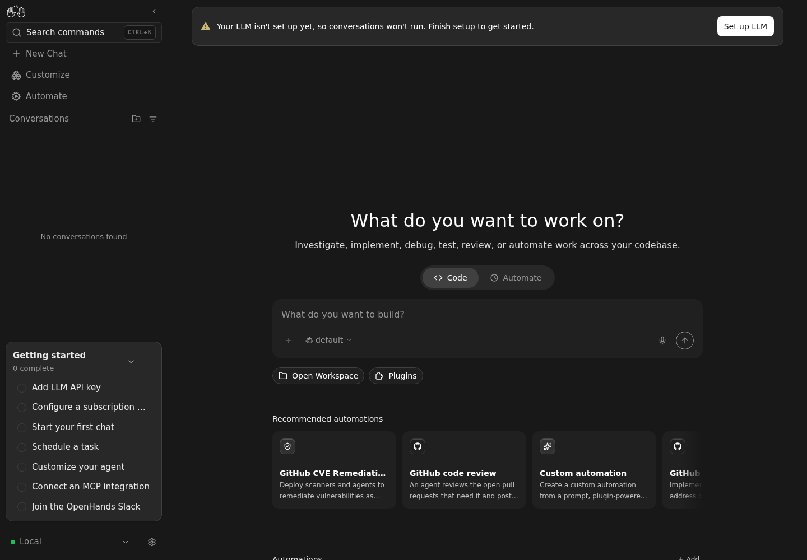
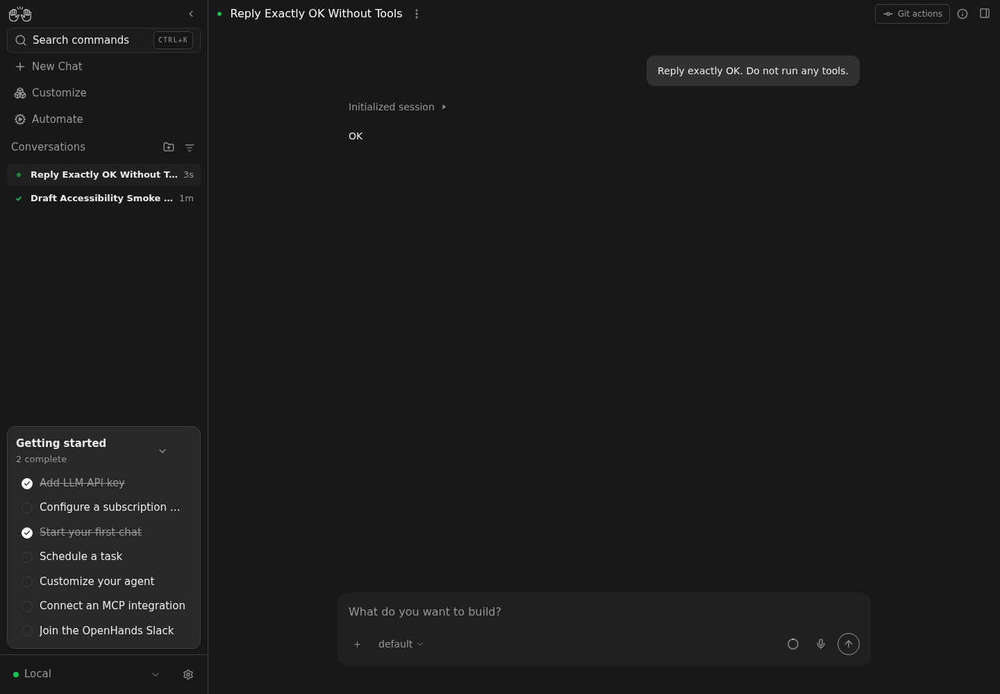

Home composer textbox semantics evidence
Issue #19975: the same home-page workflow was captured on current main before the fix and on this branch after the fix. No customer data or secrets are shown.
Visual captures

Accessibility tree excerpts
Before
- text: What do you want to build? - button "More actions" [disabled] - 'button "Switch agent profile: default"': default - button "Start dictation" - button "Send message" [disabled]
After
- textbox "What do you want to build?" - button "More actions" [disabled] - 'button "Switch agent profile: default"': default - button "Start dictation" - button "Send message" [disabled]
DOM semantic evidence
Before DOM
{
"found": true,
"tag": "DIV",
"contenteditable": "true",
"role": null,
"ariaLabel": null,
"ariaLabelledBy": null,
"tabIndexAttribute": null,
"tabIndexProperty": -1,
"dataPlaceholder": "What do you want to build?",
"activeBefore": true
}
After DOM
{
"found": true,
"tag": "DIV",
"contenteditable": "true",
"role": "textbox",
"ariaLabel": "What do you want to build?",
"ariaMultiline": "true",
"ariaDisabled": null,
"tabIndexAttribute": "0",
"tabIndexProperty": 0,
"dataPlaceholder": "What do you want to build?",
"activeBefore": true
}
Editor and submission smoke
The fixed composer was located by role=textbox[name="What do you want to build?"], accepted typed text, enabled the send button, and Enter submission opened a conversation.
{
"text": "Reply exactly OK. Do not run any tools.",
"activeRole": "textbox",
"activeLabel": "What do you want to build?",
"sendDisabled": false
}
